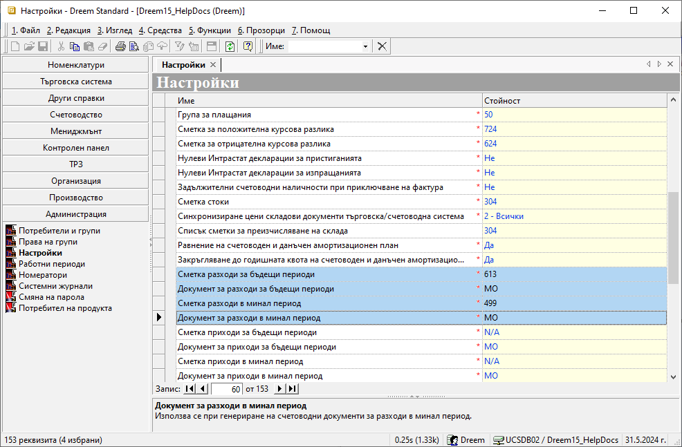
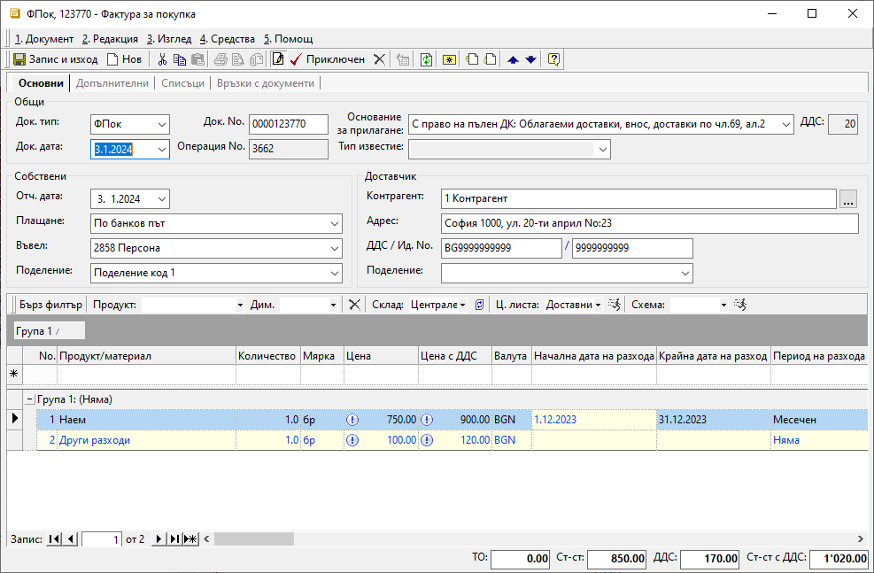
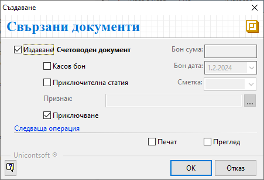
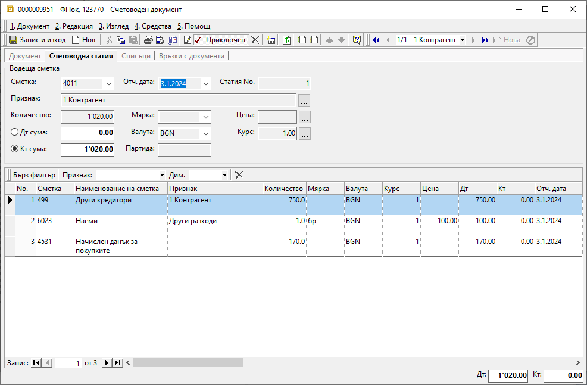
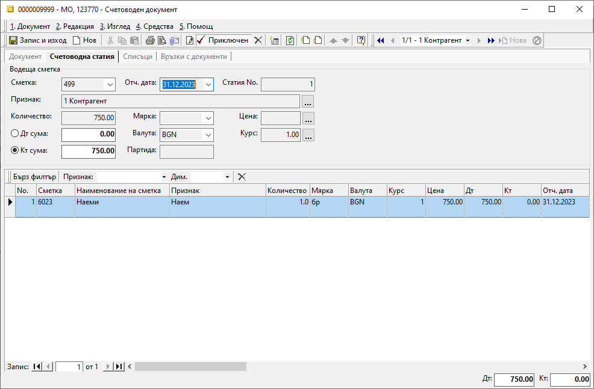
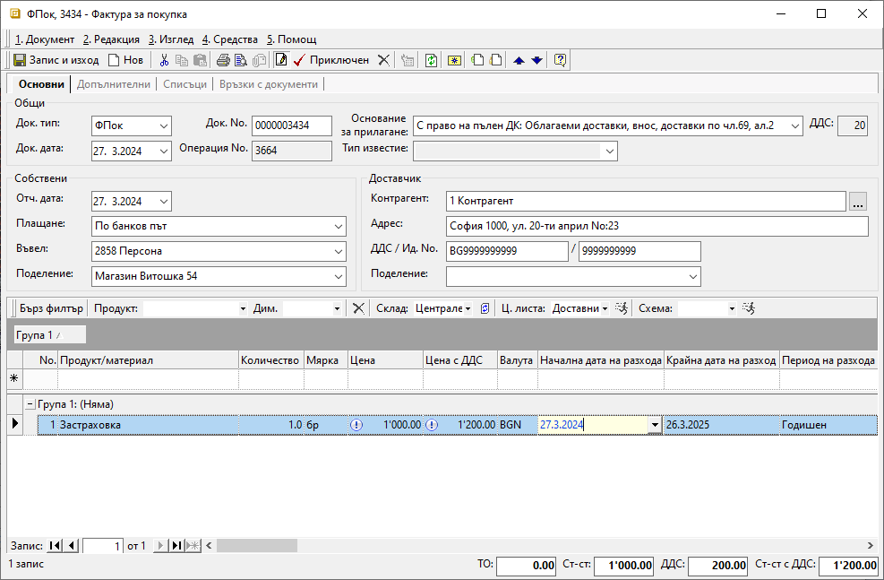
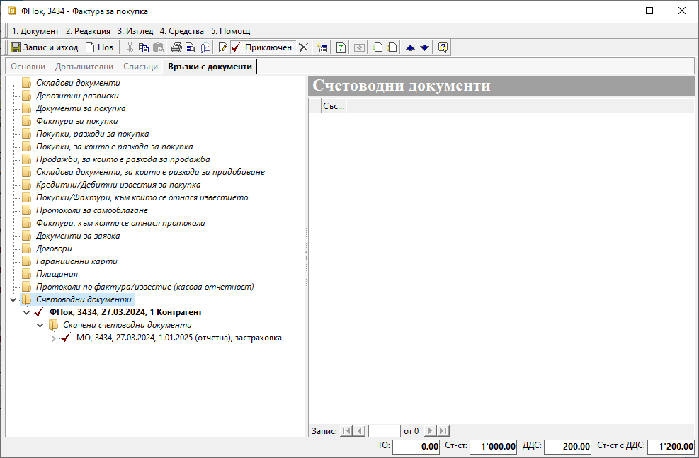
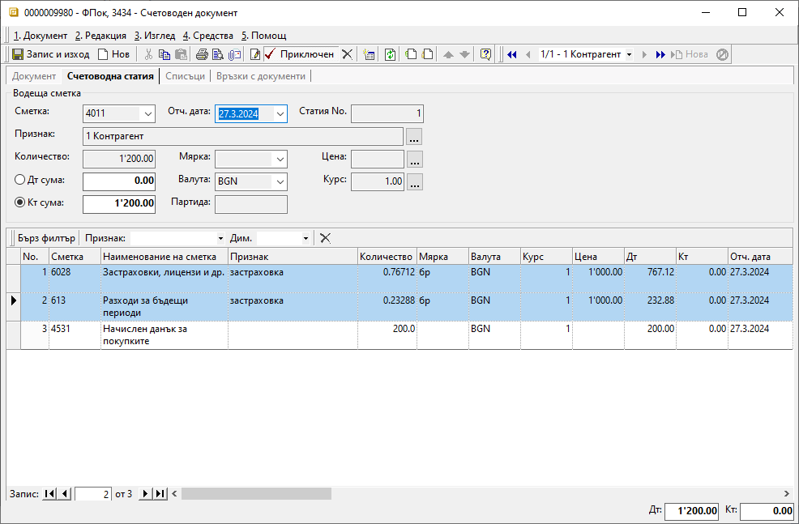
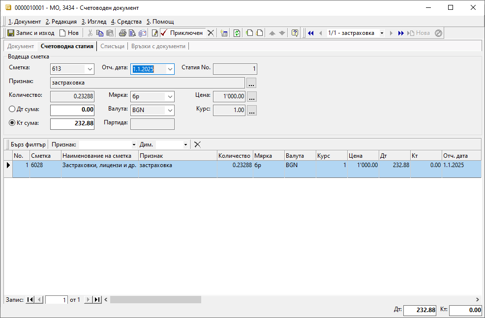

Разходи за минали и бъдещи периоди#
Въведение и настройки#
В редица случаи се налага въвеждане на документ, издаден в текущия данъчен период (календарна година), но отнасящ се за минал такъв. Това са, например, кредитните известия с обща отстъпка като бонус оборот, фактури от януари за покупки в декември и други.
Подобни случаи отработваме в системата, използвайки схема за отразяване на разхода за избран период още с въвеждането на документа. Този метод може да се прилага при работа с разходи за минали и бъдещи периоди.
За да работи тази схема, предварително в Администрация || Настройки трябва да имате посочени и счетоводни сметки, и типове счетоводни документи, в които системата да създаде счетоводните записвания. Ако тази настройка липсва, в редовете на документите/фактурите за покупка ще бъдат заключени колоните Начална дата на разхода, КРайна дата на разхода и Период на разхода.

При работа с документи за минали или бъдещи периоди е задължително настройките на Работни периоди в Администрация да бъдат съобразени. При липсващ разрешителен период, системата не позволява приключване на документи или редактиране на дати.
Системата дава избор как да се раздели разходът - Месечен, Месечен с равни суми, Годишен и Годишен с равни суми. При месечното разделяне системата ще създаде по един документ за всеки от участващите месеци, като сумата в него ще е съобразена или с броя календарни дни(Месечен), или ще е еднаква за всеки от месеците (Месечен с развни суми). При отнасянето на разхода на годишна база, ще имаме по един документ за всяка от участващите години. И тук сумите могат да бъдат съобразени с броя участващи дни (Годишен) или да се използва еднаква сума за всяка година (Годишен с равни суми).
Разходи за минали периоди#
С пример ще покажем как би изглеждало въвеждането на документ, включващ разход за минал период.
В месец февруари 2024 г. получавате фактура с наем за декември 2023 г., в която са включени и други разходи за обекта за януари. Документът е бил издаден на 03.01.2024 г.
При въвеждане на фактурата в Док.дата записвате 03.01.2024. Другите разходи, участващи във фактурата, са в текущата календарна година, затова въвеждате без особености.

Наемът, обаче, се отнася за минала календарна година и е коректно да бъде отразен като разход за минал период. Затова за продукт Наем, в колони Начална дата на разхода и Крайна дата на разхода,записвате съответните дати, които обхващат периода, за който се отнася разходът. В случая това са 01. - 31.12.2023 г. Разходът е за един месец и в Период на разхода избирате тип Месечен.
Ако колоните не са видими, могат да бъдат изведени от Изглед на списък, който се достъпва с десен бутон на мишката върху реда с имена на колоните.
Приключвате фактурата за покупка и генерирате счетоводно записване:

Така системата създава едновременно следните счетоводни записвания:
Основният счетоводен документ е с отчетна дата 03.01.2024 г. В него сумата на наема от декември е отразена в настроената за Сметка за разходи в минал период с/ка 499. Другите разходи са в текуща календарна година, затова се осчетоводяват в гр. 60 според настроения Сметкоплан.

Скаченият документ МО съдържа отнасянето на сумата на наема по дебита в гр. 60 с отчетна дата 31.12.2023 г.

Салдото, което остава по кредита на с/ка 499, ще се закрие в 2024 г. с основния счетоводен документ на фактурата.
Разходи за бъдещи периоди#
Един от най-често срещаните случаи на разходи за бъдещи периоди са застраховките. Ще въведем примерен документ за годишна застраховка от 27.03.2024 г. За целта, както посочихме, трябва да бъдат направени съответните настройки в меню Администрация, за да са достъпни колоните Начална дата на разхода, Крайна дата на разхода и Период на разхода. В тях посочвате срока на застраховката и избирате тип на разхода. Нека изберем Годишен, като така системата ще разпредели сумите на база брой дни от всяка участваща година.

Документът за покупка трябва да се приключи със счетоводно записване. Така системата генерира два свързани счетоводни документа - ФПок и МО.

В основния счетоводен документ ФПок отчетната дата е 27.03.2024 г. Тук, спрямо избрания тип на разхода Годишен, системата е осчетоводила автоматично сумата за 2024 г. в настроената от гр.60 сметка в Сметкоплан. Оставащата за 2025 г. сума отива по сметката Разходи за бъдещи периоди, настроена в Администрация.

В скачения счетоводен документ МО сумата на застраховката за 2025 г. се прехвърля от сметката за разходи за бъдещи периоди в настроената сметка за застраховки от гр.60. Отчетната дата е първият ден в 2025 г.

За да въведем разходи за минал или бъдещ период, е нужно:
Настройка на съответните счетоводни сметки и типове документи в Администрация || Настройки || Група: > Счетоводни настройки
Избор на Начална дата на разхода, Крайна дата на разхода и Период на разхода в документа (фактурата) за покупка
Генериране на счетоводно записване към фактурата за покупка